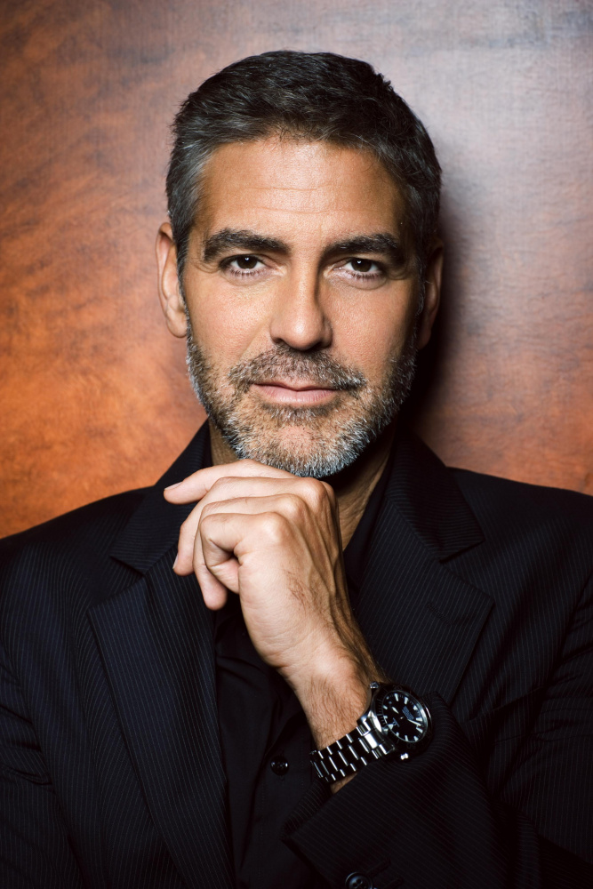
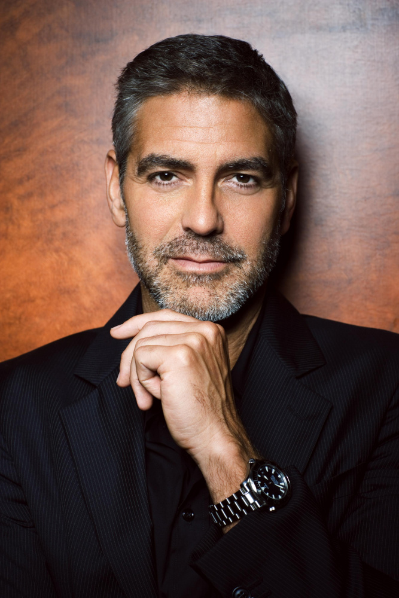

Brad Pitt
William Bradley Pitt (born December 18, 1963) is an American actor and film producer. He is the recipient of various accolades, including two Academy Awards, two British Academy Film Awards, two Golden Globe Awards, and a Primetime Emmy Award. One of the most influential celebrities, Pitt appeared on Forbes' annual Celebrity 100 list from 2006 to 2008, and the Time 100 list in 2007.
Milla Jovovich
Milica Bogdanovna Jovović[a][b] (/ˈjoʊvəvɪtʃ/ YOH-və-vitch; born December 17, 1975), known professionally as Milla Jovovich (MEE-lə), is an American actress and former fashion model. Her starring roles in numerous science-fiction and action films led the music channel VH1 to deem her the "reigning queen of kick-butt" in 2006. In 2004, Forbes determined that she was the highest-paid model in the world.
George Clooney
George Timothy Clooney (born May 6, 1961) is an American actor and filmmaker. Known for his work in both blockbuster and independent films, he has received numerous accolades, including two Academy Awards, a British Academy Film Award and four Golden Globe Awards. His honors include the Cecil B. DeMille Award, the Honorary César, the AFI Life Achievement Award, and the Kennedy Center Honor.